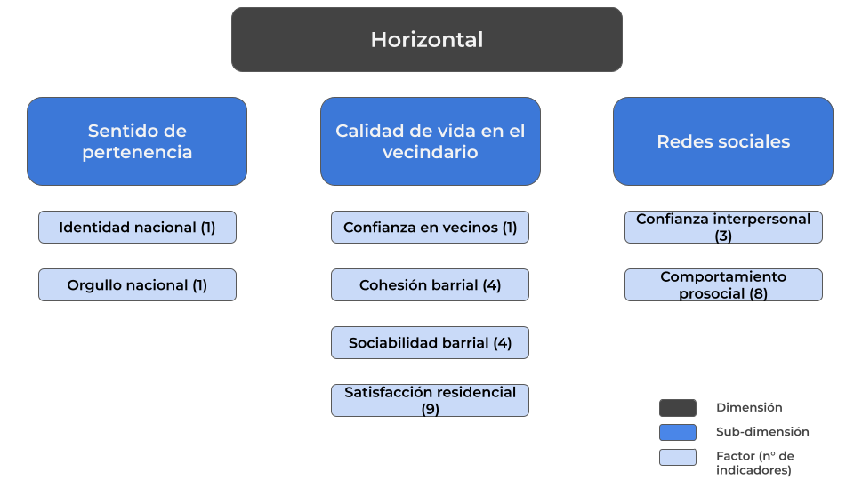

La conceptualización de la cohesión social se inspira de la acepción de Chan et al. (2006), la cual establece dos dimensiones para la cohesión social: Vertical y Horizontal. La primera se enfoca en las relaciones entre los ciudadanos (o sociedad civil) y el Estado y sus instituciones, mientras que la segunda aborda las interacciones sociales entre los individuos.
“La cohesión social es un estado de cosas que concierte tanto a las interacciones verticales como horizontales entre los miembros de la sociedad, caracterizado por un conjunto de actitudes y normas que incluyen la confianza, el sentido de pertenencia y la voluntad de participar y ayudar, así como sus manifestaciones conductuales” (Chan et al., 2006, p. 290).
3 Propuestas
3.1 Propuesta LAPOP
3.2 Propuesta ELSOC

3.3 Diferencias
1) Propuesta con ELSOC es mucho más compleja en tanto tiene mayores niveles de granularidad y, consecuentemente, mayor cantidad de factores en comparación con la propuesta de LA, cuya perspectiva es más minimalista.
Esto se expresa en, por ejemplo, la subdimensión de confianza en instituciones y democracia. En la primera propuesta esta se entiende como una subdimensión compuesta de dos factores: confianza en instituciones y satisfacción con la democracia. No así, en la propuesta construida con LAPOP estos factores se entienden como dos subdimensiones independientes.
2) En la propuesta con ELSOC se consideran varias subdimensiones que no están presentes en el índice de LA debido a decisiones basadas en inconsistencia teórica y/o estadística, tal como el factor de comportamiento prosocial, el cual intentó integrarse en con datos de WVS y, si bien la consistencia interna del factor era aceptable, no correlacionaba con los demás factores de su dimensión.
3) Las propuestas no comparten ningún factor de sus subdimensiones. Si bien ambas integran confianza interpersonal en su medición, ELSOC la considera como un factor de segundo orden, mientras que en la propuesta de LAPOP es un factor de primer orden.
3.4 Nueva propuesta
En comparación con la anterior propuesta hecha con ELSOC, se elimina la subdimensión de Sentido de pertenencia, puesto que para la construcción de la propuesta con LAPOP se definió que era problemático comprender indicadores como orgullo nacional dentro de la cohesión social. En su lugar, se integra un factor de pertenencia al barrio dentro de la subdimensión de vínculo territoriales. Asimismo, se incluye una nueva subdimensión de seguridad (siguiendo la propuesta con LAPOP), considerándose como uno de los elementos centrales durante el último tiempo en las discusiones relacionadas al vínculo social. Por último, se mantiene la subdimensión de redes sociales pero con dos cambios: se añade un tercer factor de ayuda económica (1), y se equilibra la cantidad de indicadores por cada factor (2). Para ver en profundidad cuáles son las variables que componen cada factor y su operacionalización puede revisar los anexos.
4 Descriptivos nueva propuesta
A continuación, se presentan los análisis descriptivos de los constructos presentados en la propuesta renovada:
Cargando paquete requerido: pacman
Installing package into '/home/juancastillo/Dropbox/Rlibrary'
(as 'lib' is unspecified)
Warning in utils::install.packages(package, ...): installation of package
'srvyr' had non-zero exit status
srvyr installed
Warning in pacman::p_load(tidyverse, sjmisc, here, sjlabelled, psych, rstatix, : Failed to install/load:
srvyr
Scale for fill is already present.
Adding another scale for fill, which will replace the existing scale.
Warning: No shared levels found between `names(values)` of the manual scale and the
data's fill values.
No shared levels found between `names(values)` of the manual scale and the
data's fill values.
No shared levels found between `names(values)` of the manual scale and the
data's fill values.
Figure 4.1: Likerplot de índices de redes sociales
Scale for fill is already present.
Adding another scale for fill, which will replace the existing scale.
Figure 4.2: Likerplot de índices de seguridad
Scale for fill is already present.
Adding another scale for fill, which will replace the existing scale.
Figure 4.3: Likerplot de índices de vínculos territoriales
Figure 4.4
La Figure fig-long-9, que presenta los índices de seguridad, presentan una dinámica fluctuante. La seguridad objetiva —asociada a hechos delictivos concretos— muestra inicialmente un predominio en el nivel bajo, que se mantiene hasta 2021. Sin embargo, en 2023 se observa un cambio drástico: la proporción de personas en nivel alto aumenta significativamente, superando al nivel bajo por primera vez en la serie. Este quiebre podría relacionarse con variaciones coyunturales en la presencia de delitos o en la difusión de información sobre seguridad pública. La seguridad subjetiva, en cambio, mantiene una trayectoria más estable, con predominio del nivel alto, aunque con ligeras oscilaciones. Su punto más favorable se da en torno a 2021, para luego experimentar un descenso en 2023, lo que evidencia que, a pesar de la mejora en indicadores objetivos, las percepciones de seguridad cotidiana no necesariamente siguen la misma tendencia.
Figure 4.5
Por su parte, la Figure fig-long-10 presenta la distribución de índices de redes por ola (ELSOC 2016-2023), considerando tres dimensiones: Ayuda Económica, Comportamiento Prosocial y Confianza Interpersonal. En el caso de la Ayuda Económica, la proporción de personas con niveles altos se ha mantenido relativamente estable entre 2016 y 2019, con una leve disminución hacia 2022, aunque se observa un repunte respecto de años anteriores. En contraste, el Comportamiento Prosocial muestra una tendencia decreciente en los niveles altos a lo largo del período, indicando una reducción sostenida en la disposición a participar en acciones solidarias o cooperativas. Finalmente, la Confianza Interpersonal evidencia la caída más abrupta: tras mantenerse en niveles altos hasta 2019, en 2022 se observa un desplome, con predominio casi absoluto de los niveles bajos.
Figure 4.6
En cuanto al vínculo territorial, la Figure fig-long-11 tanto la satisfacción con el barrio como el sentido de pertenencia se mantienen en niveles altos a lo largo del período. Si bien en 2016 se observa una proporción algo mayor de respuestas en el nivel bajo, en los años siguientes ambas dimensiones tienden a estabilizarse, superando el 80% de la población en niveles altos. Esto sugiere una fuerte estabilidad en la evaluación positiva del entorno barrial y en el apego comunitario, con variaciones mínimas entre olas.
Medición de la cohesión social con ELSOCMedición de la cohesión social con ELSOC3Migración1IntroductionAbstract1Introduction2Marco conceptual3Migración4Bivariados transversales5Cohesión social horizontal y migración: un análisis longitudinalAnexos2Marco conceptual
2Marco conceptual – Medición de la cohesión social con ELSOC2Marco conceptual – Medición de la cohesión social con ELSOC2Marco conceptual – Medición de la cohesión social con ELSOCMedición de la cohesión social con ELSOC